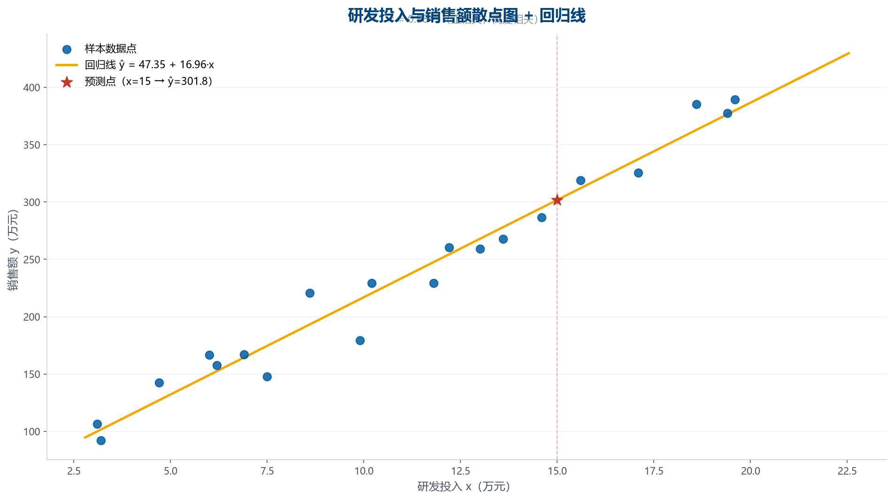

① 需求 · 先明确问题，再动手分析（DIG 起点）
Q
要回答的业务问题
研发投入与销售额是否存在线性关系？如果研发投入达到 15 万元，销售额大概能达到多少？
D
数据来源
20 次抽样：研发投入 x（万元）与销售额 y（万元），示例数据保证 R² > 0.8
G
希望的结果
计算相关系数 r（方向+程度）、建立一元线性回归方程 ŷ = a + bx、给出 R² 与 x=15 万元时的预测值，并做因果警示
② D 描述数据 · 先理解数据，再分析
记录数
20
行
字段数
3
列
样本量
20
次抽样
预测点
x=15 万元
位于样本范围内（内插）
| 字段 | 类型 | 缺失 | 缺失率 | 唯一值 | 样例 |
|---|---|---|---|---|---|
| 样本编号 | 文本 | 0 | 0.0% | 20 | 样本01、样本02 … |
| 研发投入x(万元) | 数值 | 0 | 0.0% | 20 | 19.4、10.2 … |
| 销售额y(万元) | 数值 | 0 | 0.0% | 19 | 377.6、229.5 … |
| 样本编号 | 研发投入x(万元) | 销售额y(万元) |
|---|---|---|
| 样本01 | 19.4 | 377.6 |
| 样本02 | 10.2 | 229.5 |
| 样本03 | 12.2 | 260.3 |
| 样本04 | 14.6 | 286.6 |
| 样本05 | 7.5 | 147.7 |
③ I 挖掘数据 · 相关分析 + 回归分析
1
相关分析 · 相关系数
r = Σ(x−x̄)(y−ȳ) / √[Σ(x−x̄)²·Σ(y−ȳ)²]，取值范围 [−1, 1]。
相关系数 rr = Σ(x−x̄)(y−ȳ) / √[Σ(x−x̄)²·Σ(y−ȳ)²]
代入x̄=11.09, ȳ=235.48，Σ(x−x̄)(y−ȳ)=9,058.17，√[Σ(x−x̄)²·Σ(y−ȳ)²]=9,202.97
结果0.9843
解释r = 0.9843：正相关，高度相关。说明研发投入与销售额之间存在正的线性关系。注意：这仅表明统计上的线性关联，不能直接推断因果关系。
2
回归分析 · 最小二乘法
一元线性回归 ŷ = a + bx，b = Σ(x−x̄)(y−ȳ)/Σ(x−x̄)²，a = ȳ − b·x̄。
斜率 bb = Σ(x−x̄)(y−ȳ) / Σ(x−x̄)²
代入Σ(x−x̄)(y−ȳ)=9,058.17，Σ(x−x̄)²=533.94
结果16.9648
解释斜率 b = 16.9648：研发投入每增加 1 万元，销售额平均增加 16.96 万元。
截距 aa = ȳ − b·x̄
代入a = 235.48 − 16.9648×11.09
结果47.345
解释截距 a = 47.35：当研发投入为 0 时的销售额基准水平（仅数学含义）。
回归方程ŷ = a + bx
代入ŷ = 47.345 + 16.9648·x
结果ŷ = 47.345 + 16.9648·x
解释回归方程建立完成。
拟合优度 R²R² = 1 − SSE/SST
代入（一元回归中 R² = r²）
结果96.9%
解释决定系数 R² = 96.9%：研发投入可以解释销售额变动的 96.9%，拟合效果好。
3
预测 · x = 15 万元
预测点位于样本范围内，属于内插预测。
预测销售额ŷ₀ = a + b·x₀
代入ŷ = 47.345 + 16.9648×15
结果301.82
解释当研发投入为 15 万元时，预测销售额约为 301.82 万元。（预测点位于样本数据范围内，属于内插预测，可靠性较高）
④ 图表 · 散点 + 回归线 + 预测点

图表目的：直观展示线性关系强度、方向与预测点位置
核心发现：样本点沿回归线紧密分布（R²=96.9%），x=15 万元时预测销售额约 301.82 万元
⑤ G 给出产出 · 分层结论（事实 / 分析 / 推测 / 建议）
WHY
为什么重要
r = 0.9843，正相关、高度相关；R² = 96.9%，研发投入可解释销售额变动的 96.9%；x=15 万元时预测销售额 301.82 万元。
WHAT
数据告诉我们什么
回归模型可用于销售目标测算，但预测依赖「关系在未来保持稳定」的假设，需定期更新模型。
HOW
怎么用 / 怎么优化
[('事实', '相关系数 r = 0.9843，回归方程 ŷ = 47.345 + 16.9648·x，R² = 96.9%。'), ('分析', '研发投入每增加 1 万元，销售额平均增加约 16.96 万元（在样本范围内有效）。'), ('推测', '研发可能通过提升产品竞争力间接影响销售，但样本数据无法证明因果关系。'), ('建议', "预测值 {pred['y0_s']} 万元可作为预算参考，实际决策还需结合市场、竞品等外部因素。")]
警示 · 相关 ≠ 因果
注意事项
相关系数与回归系数只能说明统计上的线性关联，不能证明「研发投入」是「销售额增长」的原因。销售额增长可能受市场需求、品牌、渠道等因素共同影响；因果推断需要实验设计或更严格的计量方法，本分析不提供因果结论。
⑥ 推荐 Prompt · 学生可复制后自行用 AI 复现同款分析
推荐 Prompt（学生可复制此提示词，自行用 AI 复现同款分析）
这是 20 次抽样数据（CSV：样本编号、研发投入x(万元)、销售额y(万元)）。请：1) 计算相关系数并判断方向与程度；2) 用最小二乘法建立一元线性回归方程 ŷ = a + bx，给出参数含义与 R²；3) 预测研发投入 15 万元时的销售额；4) 报告中必须明确提示「相关≠因果」，不得把相关关系写成因果关系。
学生验收要点：r 与 R² 数值一致（一元回归 R²=r²）；预测公式 ŷ = a + b×15；因果警示必须出现。
⑦ QA 验证 · 数值复算 / 逻辑检查 / 输出一致性
| 检查项 | 说明 |
|---|
QA 验证：0 / 0 项检查通过